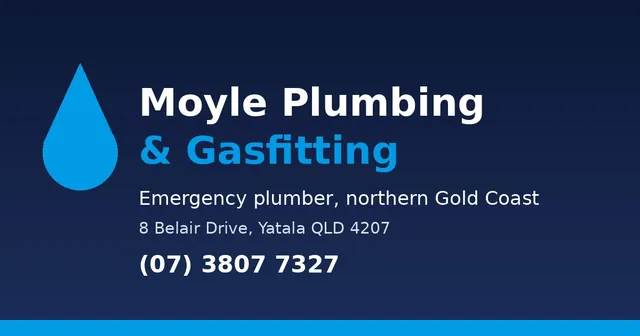

Emergency plumber repair near me, Gold Coast
When you search for an emergency plumber repair near me, you want someone close, licensed and straight about the cost. Moyle Plumbing & Gasfitting is based at Yatala and covers the northern Gold Coast, Beenleigh, Logan and Brisbane's southside. The price is agreed before any work starts.
- Family owned and run since 1983
- Based at Yatala, northern Gold Coast
- Licensed and insured plumbers and gasfitters
- Price agreed before work starts
Is this a plumbing emergency?
Some jobs can wait for a booked visit. Others get worse by the minute. Treat it as urgent and ring us on (07) 3807 7327 if you have any of these:
- Water you cannot stop: a burst pipe, a split flexible hose under a sink or a tap that will not shut off.
- Sewage backing up into a shower, floor waste or yard gully, or every drain in the house running slow at once.
- A smell of gas inside or near the meter, or a gas appliance that has just started behaving oddly.
- No hot water in a household that needs it today, or a hot water unit leaking from the tank rather than the relief valve.
- Water appearing through a ceiling, or a damp patch on a wall or floor that keeps spreading.
- The household's only toilet blocked or overflowing.
A dripping tap, a slow basin or a running cistern still needs attention, but it can wait for a booking as ordinary plumbing maintenance rather than a callout.
Do these things before the plumber arrives
- Turn the water off at the meter. On most Gold Coast homes the meter sits near the front boundary in a small box. Turn the tap or lever clockwise until it stops. If only one fixture is at fault, close the small valve under that sink or behind that toilet instead.
- Smell gas? Shut the supply at the meter or cylinder. The valve is off when its handle lies across the pipe. Get air moving through the house, keep flames and switches alone, and step outside to make the call. Do not go looking for the leak yourself.
- Switch off power to the hot water system if it is leaking. Use the labelled breaker in the switchboard, not a switch near the unit. Water and electricity together are the real danger in a hot water failure.
- Shift what you can. Rugs, boxes, power boards and anything electrical off a wet floor. Towels at doorways slow water reaching carpet.
- Take a photo. It helps us, and it helps you if there is an insurance claim later.
Then ring (07) 3807 7327 and tell us what you are seeing. You will hear whether it can hold for a booking or needs a van today.
Emergency plumber repair near me: what we fix
The same licensed tradespeople who handle day-to-day plumbing across the northern Gold Coast handle the urgent work. The common callouts are:
Burst and split pipes
Copper, poly and flexible hose failures, inside walls, under slabs and in the yard. We isolate, repair and pressure test.
Blocked drains and sewer
Kitchen, bathroom and main sewer line blockages cleared with the right machine for the pipe, with camera inspection where roots or collapse are suspected.
Hot water breakdowns
Leaking tanks, tripped elements, failed valves and dead units. Repair where it makes sense, replacement when it does not.
Gas leaks and appliance faults
Licensed gasfitters find and fix leaks, then test the whole installation before gas goes back on.
Toilets that will not flush or stop
Blocked pans, cracked cisterns, failed inlet valves and leaking seals fixed on the spot where parts allow.
Hidden leaks
Rising water bills, warm floor patches and damp walls tracked down with acoustic and thermal leak detection before anything is dug up.
See the full list on the services page, or the emergency plumbing page for how a callout runs from the first phone call to the final test.
Where "near me" actually reaches from Yatala
Our vans leave from 8 Belair Drive, Yatala, at the top of the Gold Coast where the highway runs into Beenleigh and Logan. That leaves the growth corridor from Ormeau down through Pimpama, Coomera, Hope Island and Helensvale within easy reach, with Beenleigh, Loganholme, Shailer Park and Springwood in the other direction. The southside of Brisbane and the Redlands are covered too.
- Coomera
- Pimpama
- Ormeau
- Hope Island
- Helensvale
- Beenleigh
- Loganholme
- Shailer Park
- Mount Cotton
- Redland Bay
- Eight Mile Plains
- Yarrabilba
Every suburb we attend is listed on the suburbs serviced page.
How upfront pricing works on an urgent job
An emergency is a bad time to be guessing at cost. Our approach is set pricing: the plumber looks at the fault, tells you what the repair involves and what it will cost, and starts only once you say yes. If the job changes once a wall is opened or a drain is scoped, you hear about it before the extra work happens, not on the invoice.
That also means you can compare. If a quote does not sit right with you, you are free to say no and pay nothing for the work that was not done.
Why a licensed local plumber matters at 9pm
Queensland law reserves plumbing and gas work for licensed tradespeople, and that is not red tape. A repair done wrong can flood a house a second time, contaminate drinking water or leave a gas installation unsafe. Moyle Plumbing & Gasfitting holds QBCC licence 1077154, carries insurance, and has been one family's business since 1983. Being based at Yatala rather than across the city also means the person who answers knows the estates, the older streets and the soil around here.
You can read more about the business and its history on the Moyle Plumbing & Gasfitting main website.
What happens when you call
- You describe the problem. We ask a few questions: where the water or smell is, whether you have isolated anything, and what type of hot water or gas setup you have.
- We tell you honestly whether it needs an emergency response or a booked time, and confirm who is coming and roughly when. If the emergency is real, expect us that day where the schedule allows.
- The plumber arrives, finds the fault and confirms the price before touching anything.
- The repair is done, tested under pressure or with a gas test as appropriate, and the work area is cleaned up before we leave.
Prefer email for a non-urgent job? Write to admin@moyleplumbing.com.au with your suburb and a couple of photos, and we will come back to you with the next steps.
Find us
Moyle Plumbing & Gasfitting, 8 Belair Drive, Yatala QLD 4207. Ring (07) 3807 7327 before heading over, since the vans are usually out.

Frequently asked questions
How quickly can you get to an emergency on the Gold Coast?
It depends on where you are and what the day holds. Yatala sits right beside the northern Gold Coast suburbs, and when the emergency is real we plan for a visit that same day. Whatever we tell you on the phone will be realistic.
Do you charge a callout fee for emergency work?
Outline the problem when you ring and the charging is explained before any van moves. On site, the repair carries a single firm figure before it starts, so nothing on the invoice is a surprise.
Should I turn off the mains before you arrive?
Yes, if water is running where it should not be. Turn the meter tap clockwise until it stops. If the problem is a single fixture, use the isolation valve under that fixture instead so the rest of the house still has water.
I can smell gas. Do I call you or the gas company?
Turn the gas off at the meter or cylinder first, open the house up and get outside. If the smell is strong or you are unsure where it is coming from, call your gas network's emergency line as well as us. Our licensed gasfitters locate it, repair it and test everything before the supply is restored.
Do you work on rental properties and body corporate buildings?
Yes. Property managers and agencies across the northern Gold Coast and Logan send us a lot of work, including urgent callouts, compliance work and maintenance. See the property manager page for how that works.